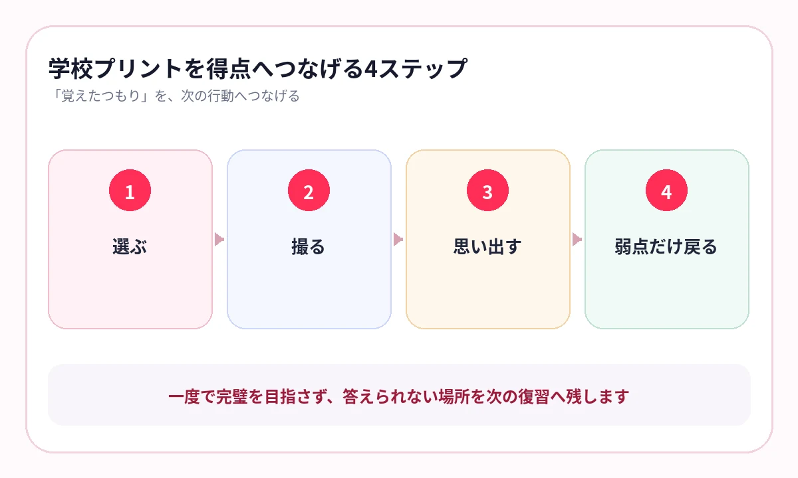

「テスト前に見直したいプリントほど、どこにあるか分からない」そんなことはありませんか？
授業で配られたプリントには、先生が大切だと考えた語句、授業で扱った図、テストで使われやすい表現が詰まっています。
ところが、受け取った日は見ても、ファイルに入れた後はほとんど開かない。テスト範囲が発表されてから探し始める。これでは、良い教材を持っていても使い切れません。
学校プリントには、テストのヒントが残っている
定期テストは、全国共通の一冊から出るわけではありません。授業で扱った内容、先生の説明、学校ワーク、配布プリントを組み合わせて準備します。
だからこそ、プリントの扱い方で差がつきます。市販の参考書を増やす前に、手元のプリントへすぐ戻れるかを確認してください。
- 先生が「重要」と言った箇所に印がある
- 教科書より短く、要点がまとまっている
- 授業で使った図や表がそのまま残っている
- 自分が間違えた書き込みが残っている
テスト前に強いのは、きれいな参考書より「授業で何を学んだか」が残っているプリントです。
ファイルへ入れる前に、3つに分ける
プリントを受け取るたびに、細かい分類を作る必要はありません。まずは用途で分けます。
答えられるようにするページ
重要語句、図表、まとめ。答えを隠して何度も確認するページです。
解き直すページ
計算、記述、資料問題。ノートや元のプリントに戻って解きます。
保管だけするページ
連絡、補足資料、すでに理解した内容。必要なら原本を残します。
スマホへ残すのは、最初の「答えられるようにするページ」が中心です。すべてを撮ると、今度はスマホの中で探すことになります。
{kind=link}

1枚を、テストまでに3回思い出す
暗記は、長時間眺めることより、答えを見ない状態で何度も思い出すことが重要です。
授業当日
重要な1〜3枚を選び、答えを隠して一度確認します。
2〜3日後
先に答えを思い出し、迷った語句だけを確認します。
テスト前
範囲を混ぜて出題し、ページの位置ではなく知識として答えられるかを確かめます。
テスト後
間違えたページだけを次回へ残し、同じ失点を防ぎます。
復習する量を増やすのではなく、戻るべき1枚を見失わないことが大切です。
横にスワイプして画像を確認できます


プリント名は「探す言葉」で付ける
日付だけで保存すると、数週間後には内容が分からなくなります。名前には、後から検索する言葉を入れます。
- 理科｜植物のつくり｜2学期中間
- 社会｜江戸時代｜期末範囲
- 公民｜三権分立｜要復習
- 生物｜消化と呼吸｜間違い多め
科目、単元、テスト名のうち、2つか3つが入っていれば十分です。完璧なフォルダより、検索ですぐ出る名前を優先します。
写真を撮ったら、その場で1回出題する
撮影だけで満足すると、デジタルの保管場所が増えるだけです。取り込んだ直後に一度答え、使える教材かを確認します。
AI暗記シートでは、写真やPDFから重要語句を隠し、出題後に「覚えた・あやしい・覚えていない」を記録できます。次は弱点を優先して出題できます。
- 重要語句が適切に隠れているか
- 不要なマスクは外せるか
- 答えを見ずに思い出せるか
- 次に探せる教材名になっているか
よくある質問
学校プリントを全部撮影した方がよいですか？
いいえ。重要事項がまとまったページ、先生が強調したページ、繰り返し間違えるページに絞る方が続きます。
いつ撮影するのがよいですか？
授業当日か、プリントをファイルへ入れる直前がおすすめです。後回しにすると、選ぶ基準も授業の記憶も薄れます。
理科と社会以外にも使えますか？
漢字、古文単語、英単語、公式や定義など、教材上の語句を隠して確認したいページで使えます。
参考情報
試験範囲・制度は公式情報、復習方法は学習科学の研究を参照しています。
先生のプリントを、しまって終わらせない
今日の1枚を、次の得点につなげる
写真やPDFを取り込み、重要語句を隠して出題。学校プリントを、テスト前にすぐ戻れる復習教材へ変えます。
iPhone・iPad対応／3枚まで無料保存／継続利用は800円の買い切り